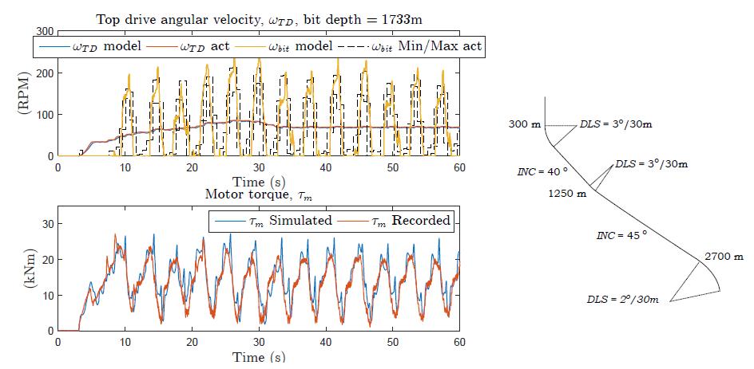
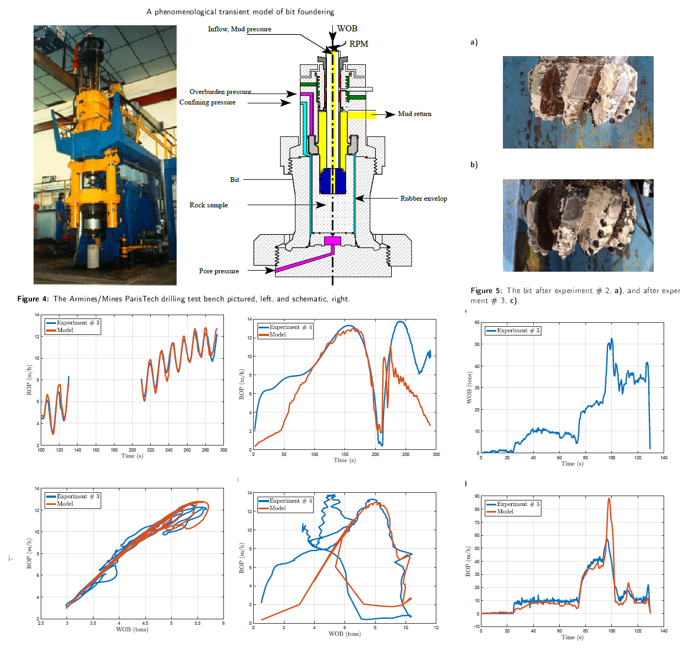
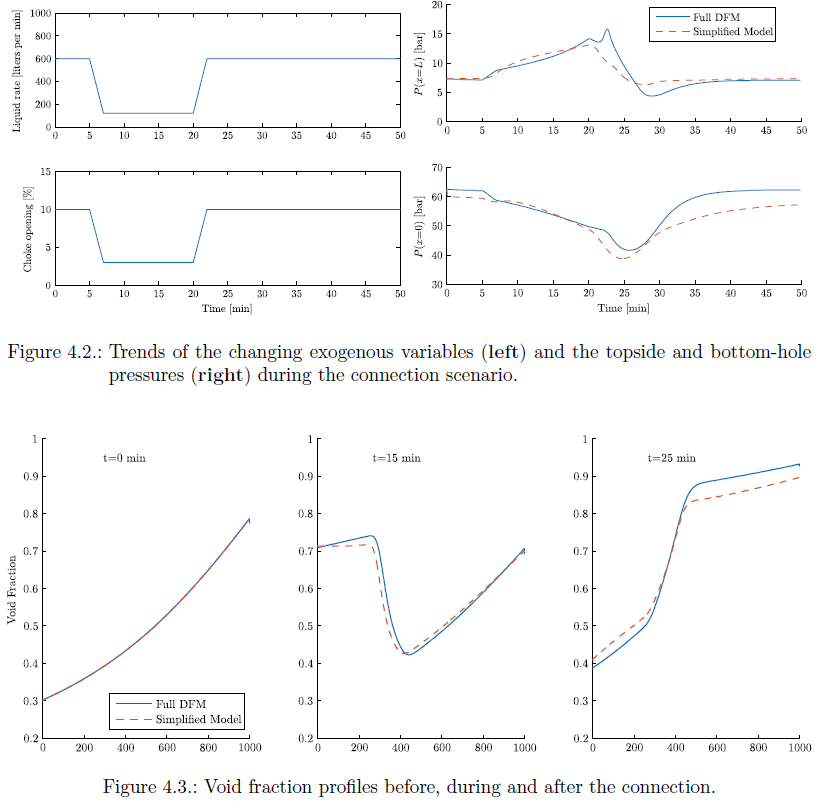

Primary domain
Dynamics, monitoring, and control of drilling systems, with emphasis on vibration mitigation and real-time optimization.
Senior Research Scientist, NORCE — Modeling, Estimation, and Control for Energy Systems
I am a Senior Research Scientist at NORCE working with model-based methods for drilling, offshore operations, and emerging energy systems. My research combines nonlinear dynamics, distributed-parameter systems, and estimation/control design to support safer, faster, and more autonomous operations.
In addition to drilling dynamics and well control, I work on hydrogen value chains and energy-system integration, and I coordinate the MARINER project alongside related Hydrogen FCs activities.
This page complements my institutional profile with selected technical highlights, publications, and open-source material. For a concise institutional overview, see my NORCE profile.
Dynamics, monitoring, and control of drilling systems, with emphasis on vibration mitigation and real-time optimization.
Physics-based reduced-order modeling, nonlinear control, observer design, and data-informed model calibration.
Managed pressure drilling, torsional/axial dynamics, hydrogen/energy-system integration, and decision support for operational teams.
If you know my work through MARINER, which I coordinate, this site is intended to show the same core competence applied across domains: physics-based modeling, estimation, and control for high-consequence energy operations.

I have worked extensively on torsional and axial drill-string dynamics, including side-force-driven stick-slip and regenerative effects. A concise overview is available in this University of Minnesota talk.

Weight-on-bit optimization via extremum seeking was studied both analytically and experimentally, with particular attention to transient foundering effects and practical implementation constraints.

My doctoral thesis and subsequent work developed simplified two-phase models designed for controller and estimator synthesis, with applications in drilling and production-oriented settings.